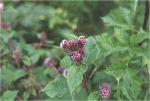
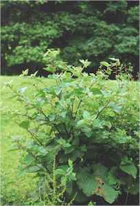

Burdock


Burdock (Lesser Burdock) Arctium minus
Fam: Compositae
(Greater Burdock) Arctium lappa
Most people's first contact with this plant comes with the ripe 'burs' sticking to the clothing, and proving the very devil to remove!! Nature has provided this plant with a very efficient method of seed dispersal!
The leaves and young leaf stems can be eaten raw or boiled in a little water for about 10mins, and are supposed to taste like asparagus; and they do - with a little stretched imagination!
The year old roots, dug in the autumn can be peeled and boiled as a vegetable - try them roast or in a stir fry.
Dandelion and Burdock 'Beer'
2 large Burdock roots and 1 large dandelion root scrubbed clean and chopped
small.
1 lb sugar, 1 lemon 2 heaped tablespoons black treacle or molasses.
(1 English tablespoon is 15 ml)
1 gallon water yeast
Boil the roots for about 20 mins in 2 or 3 pints of water, then add the sugar and treacle and stir until dissolved. Add the juice of the lemon. Strain into white plastic or stainless steel bucket and make up to a gallon. Add 1 tsp yeast and ferment in the bucket (well covered) for 4 days.
Bottle in plastic soft drinks bottles and leave for a week. Release the pressure in the bottles if the pressure becomes too high, but don't do this too near to when you want to drink it or it will be flat, and the fizz matters!! You can allow the fermentation to continue, but *do* keep checking the bottles every couple of days.
In the non alcoholic soft drink which is available in some supermarkets, the fizz is just carbon dioxide gas as in most other 'soft' drinks.


The Castle

Brigid's Garden

Moyra's Web Jewels